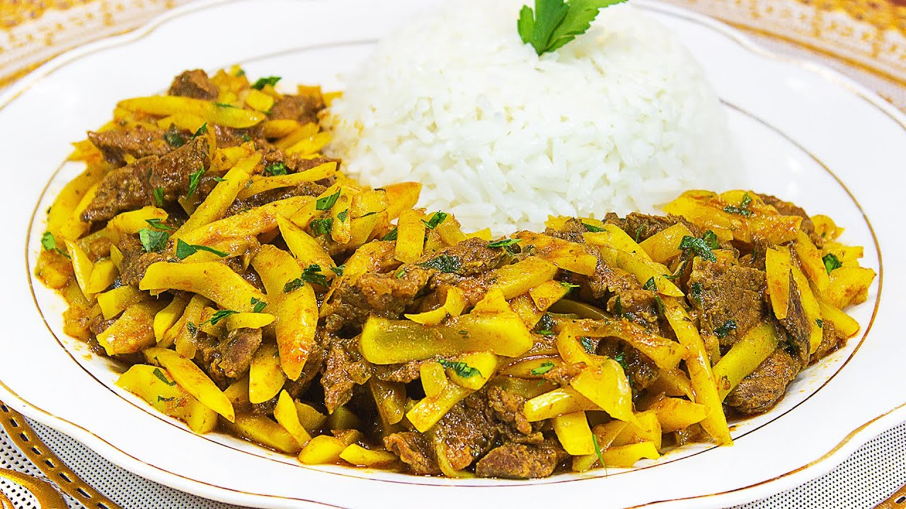

Olluquito con carne

Descripción
El olluquito de carne es un plato tradicional peruano que combina olluco (una raíz andina similar a la papa) con trozos de carne de res. Es una preparación sabrosa y reconfortante, donde los ingredientes se cocinan con especias y hierbas aromáticas para crear un guiso delicioso.
Ingredientes
- 350g de Carne de res
- 4 cucharadas de aceite vegetal
- 1 cebolla roja
- 1 papa amarilla
- 4 tazas de Arroz cocido
- 2 cucharadas de ají panca molido
- 1 Rama de Perejil Deshojado
Preparación
- Cortar la carne en cubos pequeños. Pelar la papa amarilla y cortarlas en 8 pedazos iguales. Cortar la cebolla en cubitos pequeños.
- Calentar el aceite en una olla y freír la cebolla. Agregar el ajo, el ají panca, un cubo MAGGI® Sabor Carne y la carne de res. Cocinar por 5 minutos.
- Agregar el olluco picado y 2 tazas de agua. Cocinar a fuego medio por 10 minutos.
- Agregar la papa cortada en trozos y cocinar por 5 minutos más.
- Servir el olluco acompañado de una taza de arroz. Decorar con las hojas de perejil cortado.